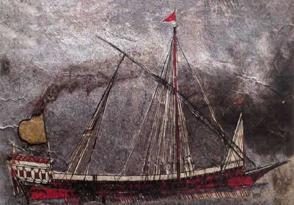
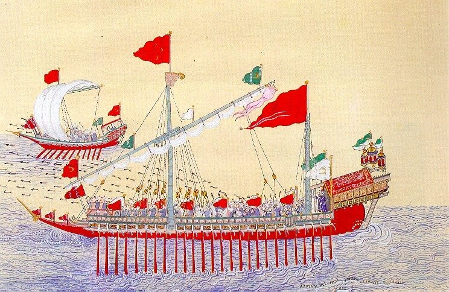
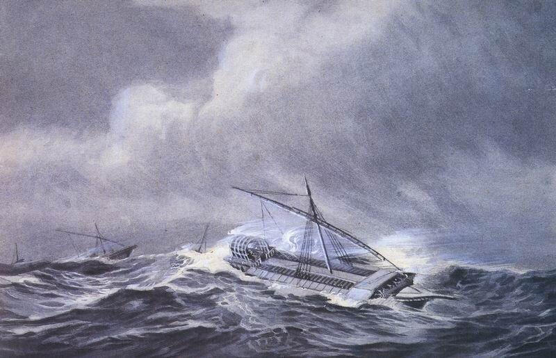

Европа с тревогой следила за приготовлениями османов. З0 января 1516 года Николе Юстиниан, посол Венеции в Турции, писал из Стамбула, что к марту текущего года будет закончено строительство 60 галер и что в городе ходят упорные слухи о предстоящей грандиозной военной кампании, направленной либо против Родоса, либо против Хиоса, либо против Апулии.

14 февраля посол сообщал о 100 тяжелых галерах (галерах-бастардах, galie bastarde, приспособленных для перевозки больших грузов) и некотором количестве легких галер (sotil), окончание строительства которых намечено на следующий год. 1 апреля он пишет о строительстве 120 галер, по большей части галер-бастард, о ста легких галерах и 40 «palandarie». Для специалиста ясно, что идет подготовка к большой десантной операции: и бастарды, и, особенно, «паландари» - это транспортные суда.
Капитан Пантеро-Пантера в своей Armata navale писал о palandaria:
« Le Palandarie sono parimetrti vsate nel Leuante da i soli Turchi in occasione dì trasportare caualleria, à poco altro seruono.»
«Паландари – судно, используемое в Леванте и в Турции для перевозки лошадей, иногда и для других целей»
Огюстен Жаль производит это название от среднегреческого Χελάνδιον. Я подробно описывал эволюцию термина хеландий. В частности, там приводится версия проф. Дж. Прайора:
«Это слово наверняка произошло от κέλης (kelēs), что означает «беговая лошадь», «рысак». Этот термин применялся как по отношению к быстроходным гребным судам с одним рядом весел (моноремам), так и к скаковым лошадям. Почти наверняка этот термин возник в качестве обозначения транспортного судна для перевозки лошадей, хотя в дальнейшем он получил более широкое использование.»
Огюстен Жаль в своем «Морском словаре» пишет, что «паландария (palandaria) относится к категории «круглых судов», имеет прямые паруса и совсем не использует весел». Однако к этому замечанию следует относиться осторожно. В донесении Леонардо Бембо, который сменил Юстиниана на посту венецианского посла, имеются такие слова: «palandane, quai sono corne galie grosse per condur cavali e artelane e monition» -«паландари – это большая галера для перевозки лошадей, артиллерии и боеприпасов» (цит. по «Дневникам» Марино Сануто-младшего, кн. XXIV, с.161). Знаменитый турецкий адмирал и картограф Пири Реис в своем сочинении «Морская книга» (Piri Reis, Kitabi Bahriye) также указывает, что паландария относится к гребным судам (стр. 454).
Дальнейшая эволюция кораблей этого типа привела к превращению их из «плавающих конюшен» в бомбардирские суда (Palandra. Плоскодонное бомбардирное судно. Михельсон А.Д., 1865)
Не будем придираться к оценкам мощи турецкого флота, сделанным венецианским послом. К нему, как и к любому разведчику, можно применить известную фразу: «Врет, как на войне». Чем ближе была война, тем выше становились оценки турецкой военно-морской мощи в донесениях посла. Без сомнения, Юстиниан был грамотным в морском отношении человеком и имел большую сеть осведомителей, но он понимал, что лучше противника переоценить, чем недооценить. На самом деле, позже выяснилось, что он завышал размеры существующего турецкого флота и темпы его строительства примерно в два раза, но уже к концу 1516 г. и особенно к весне 1517 г., когда начались маневры флота и его состав можно было оценить визуально, цифры венецианского посла оказались близки к реальным.

Султан, сам опытный воин и военачальник, сознавал, что первой задачей для обеспечения коммуникаций своего флота в восточном Средиземноморье должно стать уничтожение корсаров-христиан, действующих на этих коммуникациях. Из Бизерты был отозван корсар Куртоглу, успешно действовавший на западных коммуникациях Средиземного моря, для того, чтобы возглавить действия турецкого флота по зачистке восточного Средиземноморья от пиратских кораблей.
Первые турецкие конвои из Стамбула на сирийское побережье пошли в конце 1516 года. Собственных транспортных средств у турок пока не хватало. Тогда османы захватили несколько купеческих кораблей, принадлежащих Венеции и ее союзникам.

Зимний сезон 1516/1517 гг. оказался на редкость холодным, конвои в Сирию и Египет почти не ходили, из-за чего возник большой дефицит продовольствия и боеприпасов в армии султана, действующей в Египте. Чтобы по весне ликвидировать этот дефицит, еще зимой было начато формирование эскадры во главе с капуданом Ga'fer Aga.
Будет продолжение....